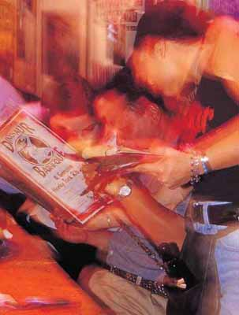

← Back to index
Butterflied Leg of Lamb with Caramelized Onion BBQ Sauce
Category: Lamb

Ingredients
The Marinade
- 1 cup plain yogurt
- Grated zest of 1 lemon
- ½ cup lemon juice
- 1 tablespoon olive oil
- 4 scallions, sliced
- 6 cloves garlic, chopped
- ¼ cup chopped fresh mint leaves
- 2 tablespoons dried thyme
- 2 tablespoons black pepper
- 1 tablespoon ground cumin
- 1 tablespoon kosher salt
The Lamb
- 1 leg of lamb, boned by a butcher (4 to 5 pounds boneless)
The Sauce
- 2 tablespoons butter
- 1 large onion, chopped
- Pinch each of kosher salt and black pepper
- 1 cup chicken broth or stock (to make your own, see
Chicken Stock)
Mutha Sauce
- 1 teaspoon ground cumin
- 3 tablespoons chopped fresh mint
Instructions
- Make the marinade. Whirl all the marinade ingredients together in a food processor. Needle the lamb all over with a fork, and nestle it in a nonreactive bowl. Spoon the marinade onto the meat and slather it around til the meat is well coated. Cover and marinate in the fridge overnight.
- Prepare a hot coal bed and mound the coals on one side of the grill. When you’re ready to cook, scrape off all the marinade and pat the meat dry. Lay the lamb, boned side down, directly over the coals. Sear it for 4 minutes. Flip it over and sear the other side for another 3 to 4 minutes. Slide the meat away from the coals, to cook it with indirect heat. Cover the grill and adjust the heat so that it’s 325° to 350° inside. Roast for 50 to 60 minutes, til the internal temperature reaches about 145°.
- Get the sauce cooking while the meat roasts. Drop the butter in a saucepan and melt over low heat. Add the onions and season with salt and pepper. Cook slowly, stirring every now and then, til deeply caramelized. Add the broth, Mutha Sauce, and cumin. Keep warm over low heat.
- Check the meat with an instant-read thermometer, and once it reaches 145°, pull it off the grill and let it rest for 15 minutes. Carve the lamb across the grain into ¼-inch slices on a cutting board with a well to catch all those delicious juices. You might have to remove some odd connectors or cut the muscle clods into more manageable sizes, but do what you’ve gotta do and keep carving across the grain. Arrange the meat on a platter.
- Pour all the accumulated meat juices into the sauce, and boost the heat up for a minute or two to get it nice and hot. Stir in the mint and then ladle the sauce over the sliced lamb. It’s ready to go.
- Lamb Shanks Braised in Rosemary Red Wine BBQ Sauce
- FEEDS 6
- Preheat the oven to 350°. Grab a knife and make a couple of shallow slits through the silver skin on both sides of each shank. Sprinkle the meat on both sides with a generous amount of salt and pepper.
- Schlepp a big, heavy frying pan over to the stove and heat it over medium-high. Pour in ⅓ cup olive oil and get it hot and fragrant. Add as many shanks as will fit comfortably in the pan without crowding, and cook til richly browned, about 4 minutes. Flip them over and brown the other side. Pull the shanks out and drop them in a roasting pan. Continue browning the rest of the shanks. Once all of them are done, clean out the pan and pour in the remaining ¼ cup olive oil.
- Drag the pan back over medium-high heat and add the onions, seasoning them with salt and pepper. Cook til soft; then toss in the garlic and cook 1 minute more. Pour in the wine and broth and bring to a boil. Add the rosemary, Mutha Sauce, and cinnamon stick. Pour everything over the shanks and cover the roasting pan tightly with foil. Shove it in the oven to braise for 1 hour; then pull it out and give the shanks a flip. Pop them back in the oven to cook for another hour.
- Once the shanks are tender and the meat is pulling away from the bone, lift them out onto a good-looking platter. Cover and keep warm. Strain the braising liquid, and skim the grease. Pour the braising liquid into a small pan and reduce by half. Keep warm.
- Line up some dinner plates and mound a portion of Garlic & Cheddar Grits in the center of each one. Set a shank into each mound, spoon some of the sauce over each shank, and bring them to the table.
- FEEDS 4
- Fire up the grill. While that’s heating, make the sauce. Toss the butter into a small saucepan and melt over medium heat. Add the shallots, season with salt and pepper, and cook til just wilted. Toss in the garlic and cook for 1 minute more.
- Splash in the red wine and add the rosemary and mustard. Raise the heat to high, and reduce the sauce rapidly for 2 to 3 minutes. Mix in the Mutha Sauce, lemon juice, and honey and simmer for a minute or two to blend the flavors. Keep warm.
- Rub the chops down with oil. Season both sides with a generous sprinkling of lemon pepper. Place over the coals. Cook for about 4 minutes, then flip the chops and cook for another 3 to 4 minutes, or til a rosy medium-rare, 130° to 135°. Pull them off the grill.
- Fish out the rosemary sprig from the sauce, and stir in the scallions. Pour it over the chops and enjoy.
Notes
- Note: Find a good butcher and make him your friend. He can make your life so much easier and get you better-quality meat than the ordinary stuff that comes in. Like everyone else, butchers respond to folks who show they care.
- I’m a big fan of anything braised, and these lamb shanks fit the bill. The fall-off-the-bone tenderness of the meat and the richness of the stock really turn me on. Served on a pile of grits, it’s outstanding.
- This quick grill dish makes it easy to come home after work and eat well. The secret is in the simple sauce all seasoned up with the classic flavor partners that lamb loves the most—rosemary and Dijon mustard.
- Note: It’s not unusual for the fat cooking off the edges of lamb chops to make the grill flare up. If this happens, cover the grill to choke off all the air. In a few seconds the flames will die down and you can uncover the grill again.